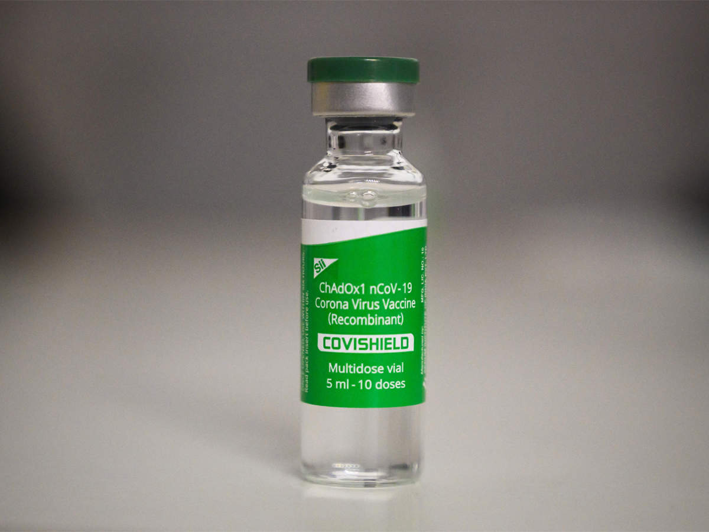

- COVID-19 Web Help
|
COVID-19, more commonly known as coronavirus or simply COVID is a contagious disease caused by the severe acute respiratory syndrome coronavirus 2. With the first documented case having been observed in December 2019 in Wuhan, China, the virus has taken the world by storm. So far, about 142,000 people have been affected globally and the number of deaths range as high as 3 million. Besides fuelling a global health crisis which for obvious might have already been in the making, the virus has had severe impact on the economy too. The developing and the underdeveloped countries have been particularly devastated by the continuous lockdowns and restrictions on domestic as well as international travel. A year ago, none of us could have even dreamt of a period where we had to be caged in our homes, much like animals in a zoo, quarantined from the society. Unfortunately, that has become the new normal. Students spending hours sitting in front of the screen, court trials on zoom calls, signing of International treaties on Google Meet has become a common sight. The only silver lining might be the optimism that shines forth from the unyielding spirit of humanity, the fact that we didn’t give up, the fact that we kept the cogs spinning, the fact that we found our way around it. The world witnessed the largest lockdown in the documented human history when the Government of India imposed strict measure to bring the spread of COVID-19 under control last year. Though people may have mixed opinions about the efficacy of such a measure and its overall impact on the lives of people, it remains a fact that such measures along with a strict adherence to covid 19 protocols by the civil society did manage to bring down the COVID curve. We rejoiced when we witnessed the daily reported cases falling and the number of successful recoveries rise but what happened next once again rattled the health system and almost brought tit down to its knees. People grew lax no longer adhering to covid protocols and the virus mutated. The new double mutated virus with E484Q and L435R mutations though not as virulent as its predecessor, has greater transmissibility. This unfortunate alliance of public laxity and greater transmissibility is what lead to the second wave of COVID 19 in India. The curve that had been almost flattened has begun rising again. India has now become the second most affected country in the world. Several countries including New Zealand have imposed curbs on travel to and from the country. This is new mutated Indian strain of virus has been declared as the virus of special concern by the top medical bodies of European union. However, in such trying times what we must never forget is that mutations are for scientists to look into and work on and what we as citizens must do is to keep following the COVID protocols strictly. Some of the Precautions that can be taken to curb the spread of coronavirus are: 1. Masking: No matter the variant, one thing all share in common is that the transmission happens predominantly through air which means that a person can catch the virus even if they are not in close proximity to the affected. When an affected person sneezes, talks or coughs, the lighter droplets get suspended in the air for a duration of 10 to 12 hours. If a healthy person enters the same room and inhales those particles then he/she face the risk of getting affected too. Therefore, it is important that one wears mask in public places. Its not enough that one sufficient, using two triple layered cloth masks are believed to provide better protection.
2. Hand Washing: Till this date, washing hands properly with soap remains one of the best defence against coronavirus. It has always been the go to measure in the toolkit to deal with any disease. It is a simple act that goes a long way in keeping a person safe from diseases. Though COVID-19 may not spread on coming in contact with infected surfaces or objects, the fact remains that when an individual touches his/her eyes, ears, nose or mouth with the same hands that came in contact with the infected surfaces, he/she faces a huge risk of contracting the virus. It is recommended that one washes his/her hand for a minimum of 20 seconds to get rid of all the germs. Also, it is necessary that we carry a bottle of sanitizer with ourselves at all time to disinfect our hands in places or situations where using soap and water may not be possible.
3. Social Distancing: A lot of those infected, might be asymptomatic i.e. the symptoms of the disease may not be apparent. It therefore becomes tough to distinguish the healthy from the infected. Close proximity to the infected can lead to the transmission of the virus to oneself, it is therefore important that one works from home if his/her company permits and stay indoors as much as possible. Even if a person’s circumstances forces him/her to step outside of the confines of their home, he/she must take special care to avoid crowded places and maintain a distance of 6 feet from others.
4. Online Medical Consultation: Some of the most common symptoms of covid 19 include weakness, head ache and dry cough while some of the uncommon ones are pain in back, and a loss of the sense of smell. One must remain alert to the symptoms of covid 19. If one feels that he/she might be suffering from covid, it is important that one reaches out to a doctor as soon as possible so that the virus if there, can be identified in the early stages. An early detection drastically lowers the mortality of the virus by killing the virus in the early stages of its infestation in the host cell.
 5. Vaccination: So far, vaccines like Covax, Covishield and Sputnik have been developed with efficacy rates of more than 90%. A vaccine helps build your immunity against a particular virus by introducing the virus in a highly weakened state in the bloodstream of a person. The white blood cells produce antibodies to counter that virus and the memory gets stored thus allowing an almost immediate re – production of the particular antibodies in case a similar virus invades the host’s body again. Even though the vaccines don’t guarantee that an individual will not be re infected by the virus, the make the immune system equipped enough that the next times the virus infects a person, the symptoms will at most be mild and non-life threatening. It is therefore paramount that we don’t fall prey to rumours circulated by certain groups like religious fundamentalists and conspiracy theorists on social media and welcome the vaccine with open arms.
|